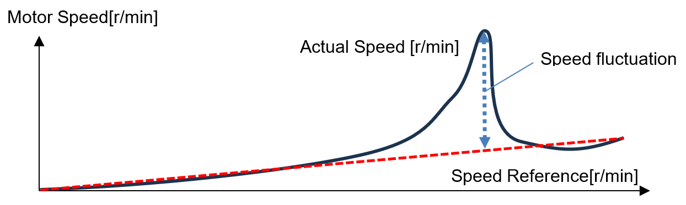
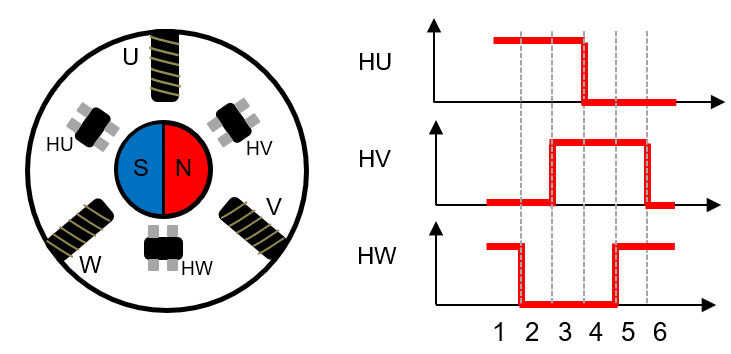
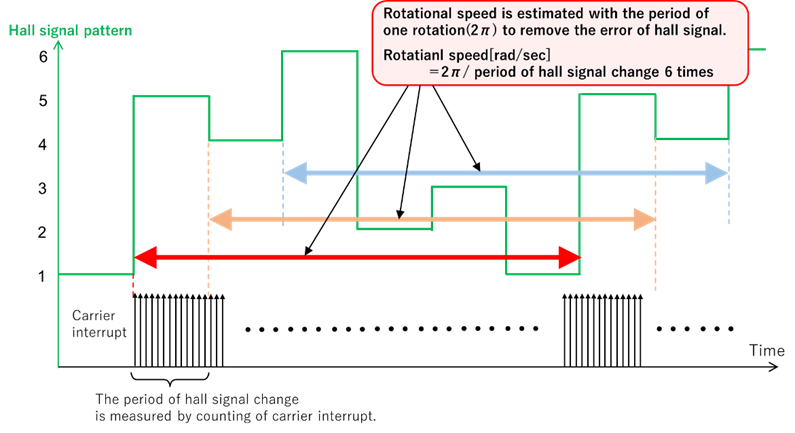
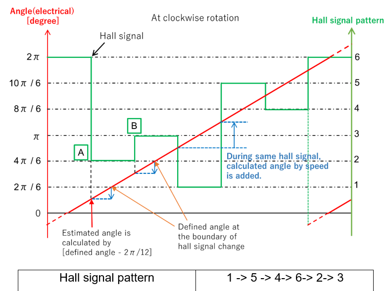
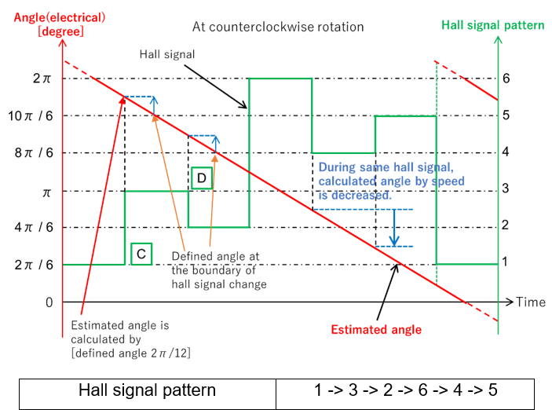
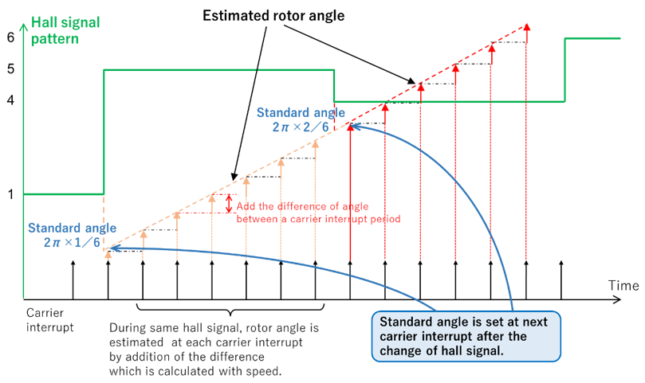
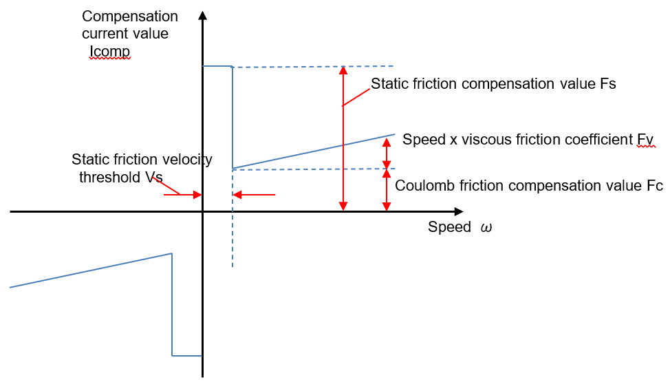

From the signal of the Hall sensor, six pulses can be detected in one
rotation of the electrical angle. Normally, six pulses per rotation is a
low resolution, so when vector control is performed, angular
complementing is required to output arbitrary torque. When a
low-resolution encoder such as a Hall sensor is used for vector control,
multiple methods are proposed as complementary processing. This sample
program uses a simple and easy-to-implement calculus method. In the
rotating state, the speed is detected by differentiating the amount of
change in the angle of the pulse. Also, assuming that the motor is
rotating at the detected speed, the angle can be obtained by integrating
the speed by each sampling cycle. This detection method uses software to
detect pulses without using hardware and includes the detection error
for the sampling cycle in the speed. Therefore, a parameter is provided
so that you can select the method of correction by using a moving
average based on the results of multiple detections in the past.
One of the unique starting characteristics of Hall sensor vector control
is the phenomenon of sudden speed change at start-up. Since no speed
signal can be obtained for a certain period of time between a standstill
and the first input of Hall sensor output pulse, the integrator of the
speed regulator may be saturated, and the speed may fluctuate due to
excessive torque current commands.
To reduce speed fluctuations, use the static friction compensation
described later and make adjustments according to the motor and load.
Please note that even if it is compensated, it will be difficult in
principle to eliminate speed fluctuations completely.

The Hall sensor consists of three sensors as shown in Figure 2, and
they are placed every 120 degrees to correspond to the UVW windings.
These Hall sensors are defined as HU, HV, and HW, respectively.
The Hall sensor signals consist of three signals: HU, HV, and HW. By
using the difference between High/Low of these signals, one rotation of
360 degrees can be represented by the six magnetic pole positions. In
other words, it can be regarded as an encoder with six pulses in one
rotation of the electric angle.

The unique Hall signal value is expressed from the 1-bit signal of HU, HV, and HW by the equation as follows.
Hall signal value =
HW + 2*HV + 4*HU
Table 1 Relationship of Hall Sensor Signal Values
| HU | HV | HW | Hall signal value |
|---|---|---|---|
| 0 | 0 | 1 | 1 |
| 1 | 0 | 1 | 5 |
| 1 | 0 | 0 | 4 |
| 1 | 1 | 0 | 6 |
| 0 | 1 | 0 | 2 |
| 0 | 1 | 1 | 3 |
The following table shows the relation between the above signal values and the Hall pattern numbers expressing 360 degrees as 1 to 6.
Table 2 Relationship Between Hall Sensor Signal and Pattern Number
| Hall pattern number | Hall signal value |
|---|---|
| 1 | 1 |
| 2 | 5 |
| 3 | 4 |
| 4 | 6 |
| 5 | 2 |
| 6 | 3 |
Based on the Hall pattern numbers, speed detection and angle detection processing are performed.
The rotation speed is detected by checking the change in Hall sensor signals at a current control interval via GPIO, counting the number of the cycles during the change in the Hall sensor signal, and measuring the period T60deg for an electrical angle of 2π/6 [rad] (one interval of Hall signal change). When the current control interval (50 μs) is Ts, T60deg can be expressed by the following equation.
T_60deg = Number of current control cycle k × T_s
Thereby, the electric angular speed ωe [rad / s] can be obtained from the following equation.
ω_e = (2π / 6) × (1 / T_60deg)
However, when estimating with one period of Hall sensor signal change, the effect of error due to jitter in the current control interval (50us) is included. In addition, the installation error of the three Hall sensors may appear as a disturbance in the detection speed. Therefore, you can also calculate based on the moving average to reduce the effect of jitter. In this sample program, you can select three detection methods: the past one period, the last six periods (one rotation), and auto-switching. For example, if using a moving average of the last 6 periods, the electric angular speed ωe6, which is the average of six periods, can be obtained by the following equation.
ω_e6 = (2π / 6) × (6 / T_360deg) = 2π / T_360deg
To simplify the angle calculation in the software implementation, the following equation is used for the equivalent calculation.
Electrical angle change in 1 carrier cycle [rad] = 2π[rad] ÷ number of carrier interrupts (2πperiod)
Electrical angular speed [rad/sec] = electrical angle change in 1 carrier cycle [rad] x carrier frequency [Hz]

In angle detection, the electric angle is estimated from two pieces of information: the direction of rotation and the estimated rotation speed. The direction of rotation is detected by the Hall sensor signal pattern. The Hall sensor signal pattern is determined by the motor used, therefore, when the signal changes, the direction of rotation can be detected by comparison between the current and last Hall signal pattern.


At point A in Figure 5, the Hall signal changes from 1 to 5.
Therefore, the direction of rotation of the motor can be judged as
clockwise. At this point A, the electric angle is set as below.
Point A (at clockwise rotation) Electrical angle [rad] = 2π[rad] x reference angle adjustment value (1/6) + internal angle in same Hall signal [rad] + offset value [rad]
At the boundary of the Hall signal change, the electric angle is estimated with the reference angle 2π/6 [rad]. The reference angle adjustment value is set depending on the Hall signal as shown in the following Table.
Table 3 Reference Angle Adjustment Values List
| Hall Signal | Reference angle adjustment value |
|---|---|
| 1 | 0 (0/6) |
| 5 | 1/6 |
| 4 | 2/6 |
| 6 | 3/6 |
| 2 | 4/6 |
| 3 | 5/6 |
At point A in Figure 4, the Hall signal changes from 1 to 5, so the reference angle adjustment value is set to 1/6, which corresponds to the Hall signal 5.

At the boundary of Hall signal change, the internal angle is set
to -2π/12 [rad] at clockwise rotation and 2π/12 [rad] at
counterclockwise rotation as the initial value. At each carrier
interrupt, the difference is added based on the estimated speed
information. However, the difference is limited between -2π/12 and 2π/12
[rad] with consideration about signal errors and speed fluctuations. Any
calculated angle is rounded if it exceeds the range of -2π/12 to
2π/12.
Table 4 Calculation formula for directional angles within the Hall signal
| Direction | Internal angle in Hall signal [rad] |
|---|---|
| Clockwise | Initial value (-2π/12) + [estimated speed (rad/s) × Ts × number of carrier interrupts] |
| or | |
| Initial value (-2π/12) + electrical angle change in one carrier cycle [rad] | |
| Counterclockwise | Initial value (2π/12) - [estimated speed (rad/s) × Ts × number of carrier interrupts] |
| or | |
| Initial value (2π/12) - electrical angle change in one carrier cycle [rad] |
To accelerate smoothly from a standstill at start-up, it is important
to detect signals of the speed and position sensors in a short time.
However, low-resolution Hall sensors have a characteristic that the
sensor signal changes in long intervals, making it difficult to increase
the sensitivity of speed detection for control at high sampling cycle,
and the speed regulator may not be able to output an appropriate torque,
resulting in excessive torque output and sudden changes in speed.
Therefore, this sample program provides a function to preset parameters
related to static friction when accelerating at start-up according to
the characteristics of the load and motor and to provide feed-forward
compensation to the q-axis current command value so as not to generate
excessive torque at start-up. Note that if it is a load or motor with
excessive static friction, or if the load changes rapidly, it may not be
possible to suppress the sudden change in speed to the desired
level.
An example of friction compensation is shown in Figure 7, where the
horizontal axis is the speed ω[rad/s], and the vertical axis is the
compensation current value Icomp[A]. This compensation is configured
with four parameters: the static friction velocity threshold value Vs
[rad/s], the static friction compensation value Fs [A], the viscous
friction coefficient Fv [A], and the Coulomb friction compensation value
Fc [A]. The unit of compensation value is amperes and is used to
compensate for the speed regulator.
The static friction velocity threshold Vs is a parameter that determines
up to which speed the compensation value Fs is applied when the motor
starts to rotate from a standstill. Static friction compensation presets
the current for the static friction required to start rotation.
The viscous friction coefficient Fv is a parameter that compensates for
the friction that increases according to speed. If you are unsure, set
it to 0. If 0 is set, the integrator of the speed regulator performs
control instead of this parameter. The Coulomb friction compensation
value is a parameter that compensates for the friction that is always
applied to the axis of the motor during rotation. For example, it
compensates for frictions caused by bearings or some contact
objects.
If the direction of rotation is reversed, the software automatically
processes these compensations by reversing positive and negative.

The compensation current value Icomp that is output by the friction compensation process can be expressed as follows. The input is the speed command value ωref[rad/s] and the speed detection value ω [rad/s], and the output is the current compensation value [A].
\[ I_{\mathrm{comp}}(\omega, \omega_{\mathrm{ref}})= \begin{cases} 0, & |\omega_{\mathrm{ref}}| < V_s \\[6pt] \operatorname{sgn}(\omega)\, F_s, & |\omega_{\mathrm{ref}}| \ge V_s,\ |\omega| < V_s \\[6pt] \operatorname{sgn}(\omega)\, F_C + F_V\,\omega, & \text{else} \end{cases} \]
The following is a list of parameters described above, a guide on how to set them, and setting examples. Since it is assumed that they are applied to the environment where theoretical calculation is difficult, they are methods for parameter calculation assumed to be calculated by experiments using actual equipment.
Table 5 Calculation Method for Friction Compensation Parameters
| Parameter | Setting Guide | Setting Example |
|---|---|---|
| Static friction compensation Fs | When starting without compensation, set Fs to approximately 80% of the torque command (q-axis current). | Fs = 0.8 × Iq_ref |
| Coulomb friction compensation Fc | Set Fc to the Iq command value at 40% of rated speed in actual operating conditions. | Fc = Iq_ref |
| Viscous friction coefficient Fv | Set Fv to 0 for gradual load changes, dominant PI speed control, or unknown conditions. | Fv = 0 |
| Static friction velocity Vs | Set Vs as the threshold for static friction. Typically, choose a small value (e.g. 1.0 [rad/s]) considering speed detection accuracy at standstill. | Vs = 1.0 |